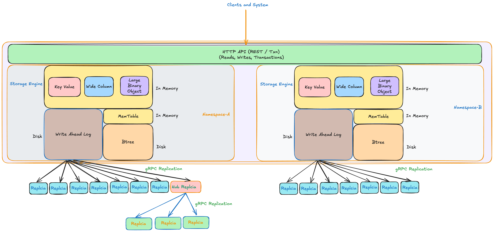
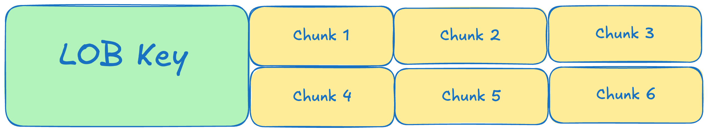

UnisonDB – Log-Native, Real-Time Database for AI and Edge Computing#
Replicates like a message bus. Acts like a database.
What is UnisonDB?#
UnisonDB is an open-source database designed specifically for Edge AI and Edge Computing .
It is a reactive, log-native and multi-model database built for real-time and edge-scale applications. UnisonDB combines a B+Tree storage engine with WAL-based (Write-Ahead Logging ) streaming replication, enabling near-instant fan-out replication across hundreds of nodes — all while preserving strong consistency and durability.
Key Features#
UnisonDB brings together high-performance storage, real-time replication, and edge-native design to power AI and Edge Computing workloads.
- Multi-Model Storage – Supports Key-Value , Wide-Column , and Large Object (LOB) data models — allowing flexible schema design for AI agents and edge systems.
- Streaming Replication – WAL-based replication with sub-second fan-out to 100+ edge replicas ensures real-time data synchronization across distributed nodes.
- Durable & Fast – Backed by a high-performance B+Tree storage engine with WAL-based durability for consistent and crash-safe writes.
- Edge-First Architecture – Purpose-built for Edge Computing and local-first applications, ensuring near-device computation and reduced cloud dependency.
- Namespace Isolation – Designed for multi-tenant environments, each namespace operates as an isolated database with independent replication streams and data consistency guarantees.
Architecture Highlights
UnisonDB’s architecture is built around a log-native core that unifies storage, streaming, and synchronization — eliminating the need for external message buses or CDC pipelines.

UnisonDB is designed to push intelligence and data closer to where it’s needed — enabling real-time AI and analytics at the edge without sacrificing consistency or durability.
Multi-Tenancy Architecture#
UnisonDB is designed from the ground up for multi-tenant environments, where multiple teams, applications, or organizations can share the same infrastructure while maintaining strict data isolation and replication control.
Each tenant is represented by a namespace — an isolated logical database that includes:
- Its own Write-Ahead Log (WAL)
- A dedicated MemTable (in-memory write buffer)
- A persistent B+Tree storage tree
- An independent replication stream
This design allows a single UnisonDB instance to host hundreds of tenants efficiently, without resource contention or operational complexity.
Key Advantages of UnisonDB’s Multi-Tenant Design#
- Complete Data Isolation – Each namespace is a fully independent database, ensuring strong security and fault isolation across tenants.
- Selective Replication – Tenants can choose which namespaces replicate to which edge nodes or hubs — perfect for geographically distributed workloads.
- Scalable Management – Run many tenants within a single UnisonDB process, simplifying configuration, monitoring, and updates.
- Edge-Aware Deployment – Deploy specific namespaces to particular regions or edge clusters, co-locating data with the AI agents or applications that need it.
Data Model#
UnisonDB’s multi-model architecture lets you design data the way your application thinks. Within a single instance, you can mix Key-Value, Wide-Column, and Large Object (LOB) storage models — all backed by the same WAL and B+Tree engine — without managing multiple systems.
- Key-Value
: Stores and retrieves data by a single unique key — simple, fast, and ideal for lookups.

- Wide-Column
: Organizes data into rows with multiple named columns — great for structured, evolving entities.

- Large Object (LOB): Manages large binary or text data in chunks — perfect for files, media, or backups. 
Use Cases#
UnisonDB is built for distributed edge-first architectures systems where data and computation must live close together — reducing network hops, minimizing latency, and enabling real-time responsiveness at scale.
By co-locating data with the services that use it, UnisonDB removes the traditional boundary between the database and the application layer. Applications can react to local changes instantly, while UnisonDB’s WAL-based replication ensures eventual consistency across all replicas globally.
Edge AI Inference with Centralized State#
Store user profiles, feature vectors, and model inputs in UnisonDB at a central or regional hub, then replicate that state out to edge nodes. Edge services perform inference locally against this replicated data, delivering low-latency responses without repeatedly calling back to the core database.
AI Agents with Shared, Ordered State#
Use UnisonDB as the source of truth for AI agents operating across regions.
Agents read from edge replicas that mirror a centrally written log, ensuring a consistent, ordered stream of events and decisions across the fleet.
Real-Time Feature and Policy Distribution for Edge AI#
Maintain global models, risk scores, and policy rules centrally, then stream updates to all edge locations through UnisonDB’s WAL-based replication.
Each edge node stays synchronized with the latest AI configurations and thresholds, enabling immediate, deterministic behavior changes close to users.
Event-Driven Microservices#
Use UnisonDB as a reactive state store that behaves like both a database and a message bus. Services can subscribe to change streams to react instantly to updates without an external queue.
Globaly Synced Cached#
Deploy UnisonDB near your application servers as a fast, persistent local cache. Unlike Redis or Memcached, UnisonDB provides WAL-backed durability and asynchronous replication, ensuring that cached state can survive restarts and sync globally.
Real-Time Personalization#
Keep user context and recommendation data local to the edge where requests occur. Updates replicate asynchronously to regional hubs — enabling fast, context-aware responses without waiting for a central database.
Multi-Region Replication#
Replicate data across geographic regions with configurable consistency.
Real-Time Analytics at the Edge#
Perform in-situ aggregation, filtering, and anomaly detection close to where data is produced. UnisonDB’s WAL-based replication lets you stream computed insights upward to central clusters without heavy data movement.
In essence: UnisonDB is ideal for systems that demand reactivity, locality, and reliability — anywhere you need your data and compute to move together instead of apart.
Quick Start#
# Clone the repository
git clone https://github.com/ankur-anand/unisondb
cd unisondb
# Build
go build -o unisondb ./cmd/unisondb
# Run in server mode (primary)
./unisondb server --config config.toml
# Use the HTTP API
curl -X PUT http://localhost:4000/api/v1/default/kv/mykey \
-H "Content-Type: application/json" \
-d '{"value":"bXl2YWx1ZQ=="}'Learn More#
- Start with the Quick Install Guide - Installation, configuration, and quick start
- Explore UnisonDB’s Internal Architecture - Deep dive into UnisonDB internals
- Browse the HTTP API Reference - REST API reference with examples
- Use Cases and Examples - Various Use Case Examples
Community & Support#
- GitHub: github.com/ankur-anand/unisondb
- Issues: Report bugs or request features
- Discussions: Join the conversation
License#
UnisonDB is released under the Apache 2.0 License.